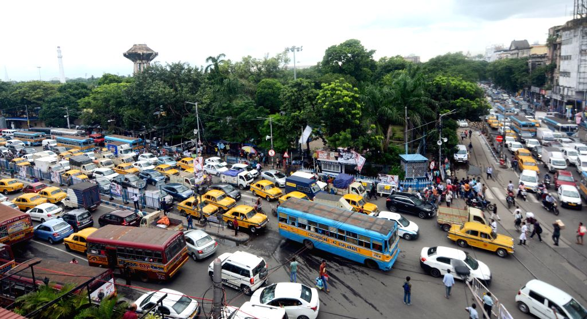
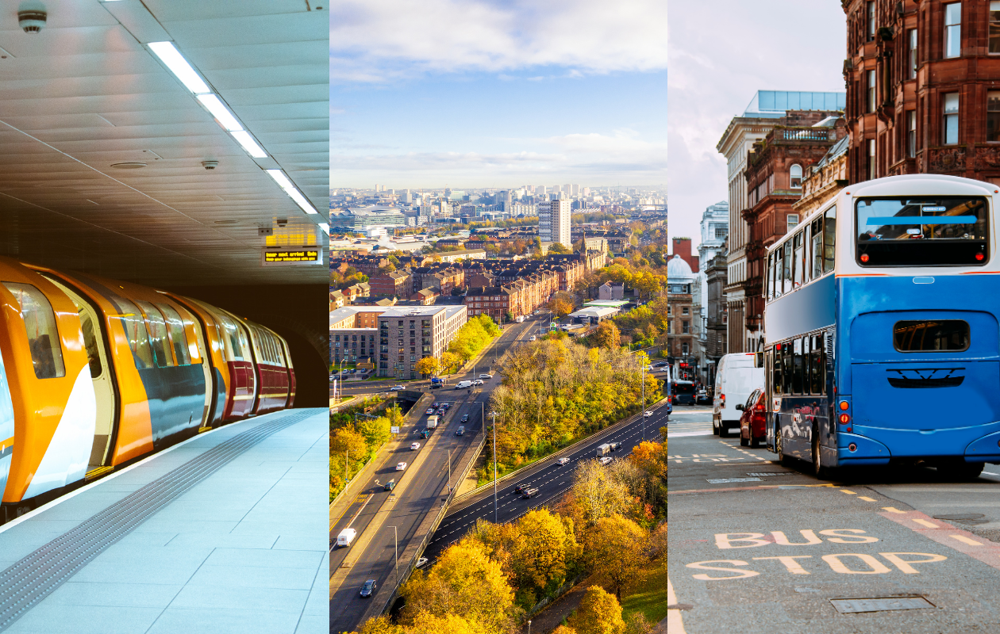
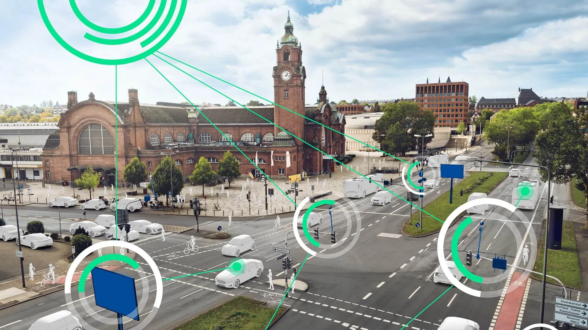

Identify Transport Problems
The first step is to find transport problems in cities. Many cities have traffic jams that cause delays. Vehicles also create air pollution, which is bad for health and the environment. Some transport systems do not work well, so travel becomes slow.
Improve Public Transport
The next step is to improve public transport. Buses and trains should be more reliable so people can trust them. If more people use public transport, there will be fewer cars on the road. Better schedules and routes can also help people travel faster and easier.


Reduce Traffic & Pollution
Smart mobility helps reduce traffic jams and pollution by encouraging eco-friendly transport like walking, cycling, and electric vehicles.
Raise Awareness
Another step is to raise awareness. People should be encouraged to walk or cycle for short trips. This helps reduce traffic and pollution. Using fewer private cars can make roads less crowded. Teaching people about smart mobility can also help create a cleaner and better city.
Course of Actions
In conclusion, smart mobility can help solve transport problems in cities by reducing traffic, pollution, and long travel times. Improving public transport and encouraging people to walk or cycle can make transportation faster, cleaner and more efficient. By taking these actions, cities can become safer, less crowded, and better places for people to live.